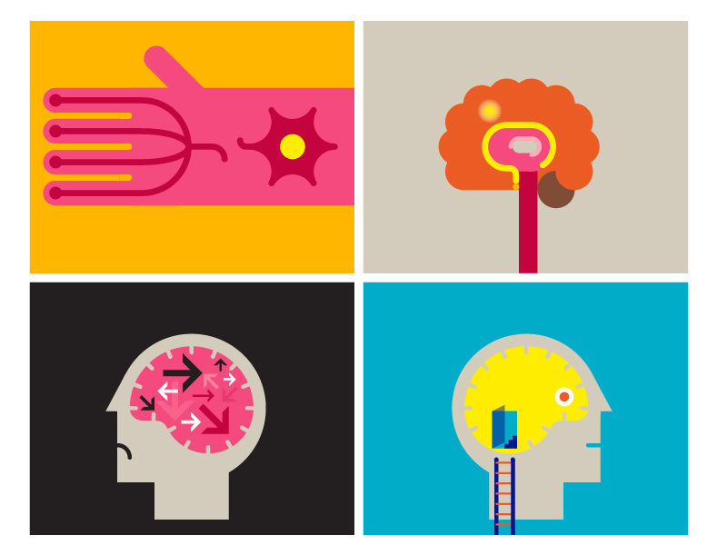
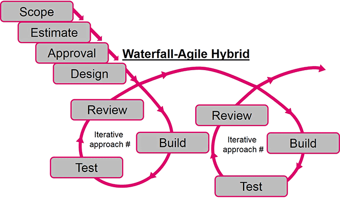
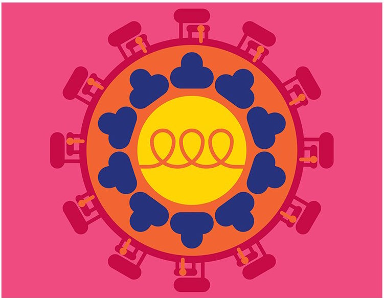

The Continuum Journal Redesign
Creating better reading experiences while overhauling a CMS that powered 300+ medical journals.

Overview
Problem
The American Academy of Neurology (AAN) was rebranding their flagship publication, Continuum, and had a tight deadline to relaunch the website to coincide with their print version and upcoming annual meeting. The print designs were approved and off to the publisher while the web assets and designs were not going to make it before the deadline. It was up to the team to get this done in time and get the client what they needed.
Solution
We worked with the AAN and their design agency to first establish a process, then get the assets we needed while building the new functionality they were expecting.
My Role
UX Design & UI Engineering
Timeline
Oct. 2017 - Apr. 2018
Tools
Adobe XD, BEM, ES6/Babel, Bootstrap (prototyping), Sharepoint
Translating a print publication to the web presented a unique set of challenges.
Approach
Since so much design and content work had been done siloed from the development team, we needed a way to rewind and review artifacts and flows that had been delivered.
At the heart of this process was converting something that was being treated as a waterfall project while the requirments called for an agile approach.
My Contribution
I started the project by demonstrating the importance of following a user-centered design process to the stakeholders, and worked with product and project management to facilitate a kick-off session to set goals and expectations for the summer.
For this highly technical project, I took the lead to conduct interviews with the journal's primary users: doctors, researchers, and other medical professionals, and led synthesis sessions with the offshore development team.
What I Learned
Advocating for UX
Explaining Why User-Centered Design is Important
Initially, my requirement from my stakeholder was to only focus on the UI of the product. However, I knew that as a UX designer, my job is to advocate for the users and to coordinate the whole balanced team to come up with the best product designs. After consulting with the Director of Project Management and other senior designers for advice, I set up a meeting with my stakeholder to explain the user-centered design process I hoped to follow. I proposed a timeline to make sure that the product can still be built within the time constraints, and explained why adding activities like interviews, brainstorming sessions, and user feedback would help the team fail fast and eventually build a better product that people wanted to use.
Eventually we were able to land on a process that helped us deliver a smarter system and meet the deadline for the AAN's annual conference (where the print and web versions of the journal would be unveiled).
From this experience, I learned about how to advocate for design when necessary. It is important not to blindly stick to a "process", but to understand why different design activities help us build better products, and to convey the value of those activities to stakeholders and other team members.
Engaging Developers and Stakeholders throughout the Process
Taking the advice of senior designers, I invited our developers to sit(skype) in on our interviews and usability testing sessions. We also held design workshops to present the top pain points identified through research and let everyone brainstorm solutions together.
The Business Side
Working with Business Requirements
During my onboarding process, I learned about the importance of gathering requirements from the development team and buy-in from various stakeholders in-and-outside of the department. Therefore, during our first week, we led a kickoff meeting with our entire team, in which we discussed:
- Goals: What should we try to achieve by the end of April? What is everyone's goal for this project?
- Success: How do we measure our success through quantitative and qualitative measures?
- Risks: What are some of the factors that might prevent us from achieving our goals? What do we need to think more about before diving into the project?
- Assumptions: What does the team assume to be true? What needs to be validated through research?
We encouraged everyone to answer these questions individually using a shared Excel file to make sure that everyone's voice is heard. Learning from people who've been developing the product really helped me understand the scope of this project and prioritize goals. I also derived a couple of things I wanted to verify through user research.
Balancing Business Needs and User Needs
Despite the importance of business requirements, I kept my initial interviews pretty open-ended to really understand what the users' goals are, what their frustrations are, and what they say about the current product.
Running Meetings Efficiently
With everyone's busy schedule and limited meeting spaces, I had to plan and facilitate meetings efficiently. A project manager was brought in to help facilitate these meetings
Building Relationships
Helping Users and Teammates
When conducting interviews, I was not only doing it for my job — I wanted to help my interviewees because these are the people saving the lives of the sick and less fortunate. As I had learned from a couple of senior designers, after my users considered me to be a part of them, they were more willing to share their ideas and set up times to talk with me; and I was able to better help them, as a result.
What I Could Have Done
Talking with More People
The Enterprise UX team at Wolters Kluwer had 10 designers; who have been in the industry for years and have an area that they excel at. I was lucky to be able to talk with most and get their advice on how to improve my visual design skills, facilitation skills, business sense, and how to plan a career path. I also got to know other designers by participating in design critiques, workshops, testings, and lunch & learn sessions.
Asking for More Feedback
Even though I reflected a lot on each activity I led and invited other designers to review all of the interview/testing scripts, we could have been more proactive in seeking out feedback. For example, if I had invited other designers to sit in on our interviews/testings/design studios, we could have got more direct feedback on our facilitation skills. As I grow as a professional, I’ll remember to keep asking feedback from people around me, whether it’s on my design, or on my way of leading design activities.